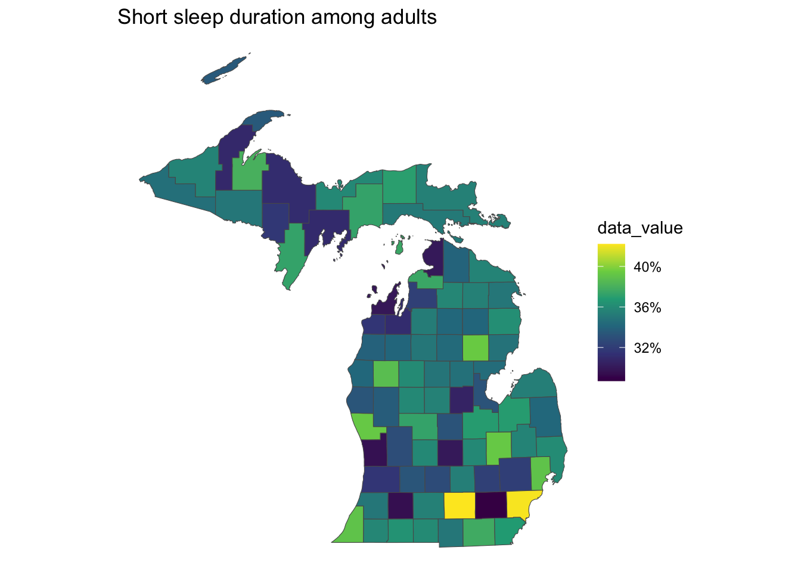

Code
# Install the latest development version
# devtools::install_github("brendensm/CDCPLACES")
# Or from CRAN
# install.packages("CDCPLACES")
library(CDCPLACES)
library(ggplot2)
library(dplyr)tigris.
Brenden Smith
March 19, 2024
An earlier version of this blog post was published on February 6, 2024 and described the new features in the development version of this package. This update shows all of the new features of the package as of March 16, 2024.
This is part of the CDCPLACES blog series. To view the other posts in this series click here.
CDCPLACES version 1.1.5 is now available on CRAN. Users can now request an sf data frame to allow for simple, streamlined mapping of PLACES data. To use this new feature, be sure to install the latest version from CRAN or GitHub.
geometryFirst we need to query our data. To include our shape file, we need to specify the argument geometry as “TRUE”. For our first example we will look at the percentage of adults sleeping less than 7 hours in Michigan Counties.
Now we can take this dataset and immediately plot the spatial data with ggplot2. I will also add a nicer looking color palette and the percentage scale in scale_fill_viridis_c, as well as a title with the function labs.

We can do the same for census level data. This is as simple as specifying our geography to “census”.
Then we can map it just the same.
This update also allows for the user to query specific counties using the argument county. In the example below, we can specify the state and counties we want to plot with simple syntax.
Once this is done, we can plot our data.
These features would not be possible without the excellent work of Kyle Walker’s package tigris. The contributions he has made to the R community have been incredibly inspiring to me. His other package, tidycensus was the inspiration for this entire pacakge. To see his work visit his website here.